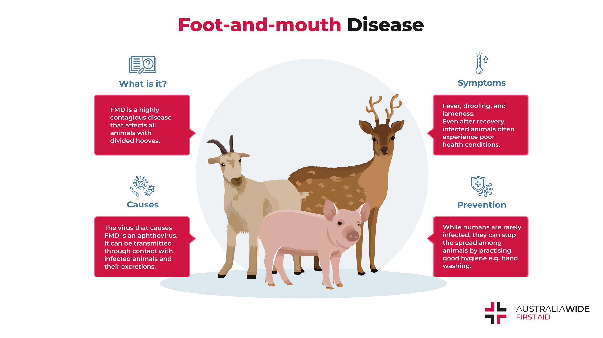
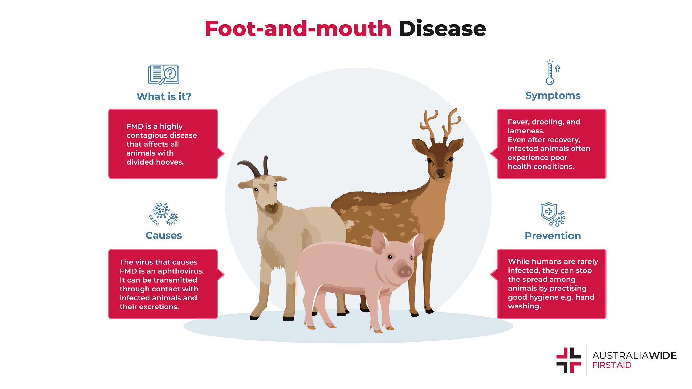

ANTHRAX
Anhrax, a
highly infectious and
fatal disease of cattle, is caused by a relatively large spore-forming
rectangular shaped bacterium called Bacillus anthracis.
Anthrax causes acute mortality in ruminants. The bacteria produce extremely potent toxins which are
responsible for the ill effects, causing a high mortality
rate. Signs of the illness usually appear 3 to 7 days after the spores are swallowed or inhaled. Once signs
begin in animals, they usually die within two
days.
Hoofed animals, such as deer, cattle, goats, and sheep, are the main animals affected by this disease. They
usually get the disease by swallowing anthrax
spores while grazing on pasture contaminated (made impure) with anthrax spores. Inhaling (breathing in) the
spores, which are odorless, colorless, and
tasteless, may also cause infection in animals and people.
.jpeg)
.jpeg)
Symptoms:
- Sudden death (often within 2 or 3 hours of being apparently normal) is by far the most common sign;
- Very occasionally some animals may show trembling, a high temperature
- Difficulty breathing, collapse and convulsions before death. This usually occurs over a period of 24 hours;
- After death blood, may not clot, resulting in a small amount of bloody discharge from the nose, mouth and other openings
Treatment and control:
- Due to the acute nature of the disease resulting in sudden death, treatment is usually not possible in animals even though Anthrax bacilli are clines. Treatment is of use in cases showing sub-acute form of the disease.
- In most cases, early treatment can cure anthrax. The cutaneous (skin) form of anthrax can be treated with common antibiotics
Preventive Measures:
- Regular annual vaccination of animals in endemic areas will prevent the disease from occurring
- Vaccination may be carried out at least a month prior to expected disease occurrence in endemic areas
- Never open a carcass of an animal suspected to have died from anthrax.
Contact a veterinarian immediately if the following symptoms are seen and seek advice on control measures to be adopted
- Fever (106-108°F), loss of appetite, depression and dullness
- Suspended rumination3. Rapid pulse and heart rates
- Difficult breathing (dyspnoea)
- Lameness in affected leg
- Crepitation swelling over hip, back & shoulder
- Swelling is hot & painful in early stages whereas cold and painless inter.
- Recumbency (prostration) followed by death within 12-48 hrs.
Black quarter (black-leg)
It is an acute infectious and highly fatal, bacterial disease of cattle. Buffaloes, sheep and goats are also affected. Young cattle between 6-24 months of age, in good body condition are mostly affected. It is soil-borne infection which generally occurs during rainy season. In India, the disease is sporadic (1-2 animal) in nature.
Causal organism :
It is a bacterial disease caused by Clostridium chauvoei
Symptoms :
- Fever (106-108°F), Loss of appetite, Depression and dullness
- Suspended rumination
- Rapid pulse and heart rates
- Difficult breathing (dyspnoea)
- Lameness in affected leg
- Crepitation swelling over hip, back & shoulder
- Swelling is hot & painful in early stages whereas cold and painless inter.
- Recumbency (prostration) followed by death within 12-48 hrs.
Treatment :
- Early treatment can be possible to complete cure of the animal.
- Consult with veterinarian immediately
Ethnovet practice :
The following measure is to be taken up in the month of May / June every year. Exudates of thirugukalli (Euphorbia tirucalli), kodikalli (Sareostemma brevistigma), aththi (Ficus racemosa), banyan tree (Ficus bengalensis), madara (Calotropis gigantea) are taken at the rate of 1 to 15 drops each in a stainless-steel vessel and mixed with 50 ml of sesame oil and ragi flour are added and made into a paste. This paste is applied as dot (coin size) in each animal in the groin region. (the above material may be used for about 50 animals)
Foot and mouth disease
The foot-and-mouth disease is a highly communicable disease affecting cloven-footed animals. It is characterized by fever, formation of vesicles and blisters in the mouth, udder, teats and on the skin between the toes and above the hoofs. Animals recovered from the disease present a characteristically rough coat and deformation of the hoof. In India, the disease is widespread and assumes a position of importance in livestock industry. The disease spreads by direct contact or indirectly through infected water, manure, hay and pastures. It is also conveyed by cattle attendants. It is known to spread through recovered animals, field rats, porcupines and birds.
 

Symptoms :
- Fever with 104-105 F
- Profuse salivation - ropes of stringy saliva hangs from mouth
- Vesicles appear in mouth and in the inter digital space
- Lameness observed
- Cross bred cattle are highly susceptible to it
Treatment :
- The external application of antiseptics contributes to the healing of the ulcers and wards off attacks by flies
- A common and inexpensive dressing for the lesions in the feet is a mixture of coal-tar and copper sulphate in the proportion of 5:1
Precautions :
- Heavy milch animals and exotic breeds of cattle bred for milk should be protected regularly
- It is advisable to carry out two vaccinations at an interval of six months followed by an annual vaccination programme
- Isolation and segregation of sick animals. It should be informed immediately to the veterinary doctor
- Isolation and segregation of sick animals. It should be informed immediately to the veterinary doctor
- Attendants and equipment’s for sick animals should be ideally separate
- The equipment’s should be thoroughly sanitized
- Proper disposal of left over feed by the animal
- Proper disposal of carcasses
- Control of flies
Ethnovet prevention practice :
When there is a outbreak in the nearby villages /surroundings take tulasi (Ocimum sp) leaves 100 gm, a pinch of common salt and turmeric rhizome 2 pieces and grind them. This has to be squeezed to obtain extract and administered orally. The residues left over can be used for smearing over the mouth region, foot region. This is repeated.
Tetanus
This is an infectious, non-febrile disease of animals and man, and is characterized by spasmodic tetany and hyperaesthesia. This disease is prevalent all over the world.
Transmission :
Infection takes place by contamination of wounds. Deep punctured wounds provide favourable conditions for the spores to germinate, multiply and produce toxin which is subsequently absorbed in the animal body. The micro-organism is present in soil and in animal faeces, and is carried into the wound by a penetrating object. The organism is present in the intestine of normal animals, and under some undetermined conditions multiplies rapidly and produces toxin in sufficient quantities to be absorbed and cause the disease.

Symptoms :
The incubation period is generally 1-2 weeks but it may be as short as 3 days. Tetanus affects many species of domesticated animals but occurs particularly in horses and lambs; less frequently in adult sheep, goats, cattle, pigs, dog and cats; and rarely in poultry. The initial symptoms are mild stiffness and an unwillingness to move all the animals. More severe symptoms develop after 12-24 hours which are stiffness of limbs, neck, head, tail and twitching of muscles. The spasms develop in response to noise. In terminal stages ears are erect, nostrils dilated, nictitating membrane protruded. Mastication becomes very difficult because mouth cannot be opened, hence the name lockjaw.
Treatment :
The treatment is carried out by first injecting antitoxin then treating the wound. Penicillin parenterally is beneficial. Muscular relaxation is achieved by injection of relaxants. The animal should be kept in a dark room and fed with the help of stomach tube.
Control :
Proper hygiene and cleanliness at castration and other surgical procedures should be observed. Sheep should be given 2 injections based 3 weeks apart to develop a solid immunity.
Bovine Rhinotracheitis
Infectious bovine rhinotracheitis (ibr) is a highly contagious, infectious respiratory disease that is caused by bovine herpesvirus-1 (bhv-1). It can affect young and older cattle. In addition to causing respiratory disease, this virus can cause conjunctivitis, abortions, encephalitis, and generalised systemic infections. Ibr is characterized by acute inflammation of the upper respiratory tract.
Treatment :
There is no direct treatment for viral diseases. Infected animals should be isolated from the rest of the herd and treated with anti-inflammatory drugs and antibiotics for secondary infections if necessary. Carrier cattle should be identified and removed from the herd.
Prevention :
Control of the disease is based on the use of vaccines.